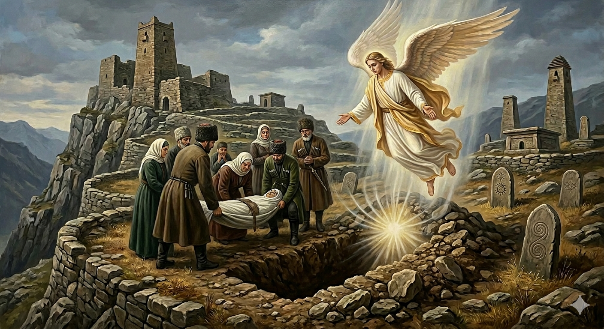

И.А. Дахкильгов. Хьехаме дувцарш - поучительные рассказы-притчи.
И.А. Дахкильгов. Хьехаме дувцарш - поучительные рассказы-притчи. Из ингушского фольклора.

Кашо денна жоп
ПӀаьтамат кхелхача хана, каша хьалйихьай из. Циггач дессад Джабраил-малейк. Кашага аьннад цо: - Тахан хьа кара кхоачар я хьона Далла везваь вайтача пайхамара йоӀ йолаш, Турпал Ӏаьлий сесаг йолаш, Хьасанеи Хьусенеи нана йолаш хинна саг. Укхунна къаьстта къахетаме хила деза хьо. Кашо жоп деннад: - Пайхамараш бувца моттиг яц ер, пайхамара йоӀ ювца моттиг яц ер, турпалаш бувца моттиг яц ер, цар къонгаш бувца моттиг яц ер. ХӀаране ше-шийгара жоп дала дезаш, цхьаккхача кхыча саго цунна хьалха жоп дала йиш йоацаш йола моттиг я ер, тӀеххьара кхоачашъяр.
РУССКИЙ
Могила ответила
Когда умерла дочь пророка Петимат, ее понесли на кладбище хоронить. Спустился ангел Джабраил и сказал могиле: - Ты принимаешь в себя дочь пророка, жену богатыря Али, мать праведных Хасана и Хусейна, поэтому будь к ней милостивее. Могила ответила: - Здесь не место говорить о пророке, не место говорить о герое Али и не место говорить о праведных Хасане и Хусейне. Здесь каждый отвечает только за себя, и никто за него не ответчик.
ENGLISH
The grave replied
When the Prophet's daughter, Petimat, died, she was carried to the cemetery to be buried. The angel Jibril descended and said to the grave: 'You are receiving the Prophet's daughter, the wife of the hero Ali, and the mother of the righteous Hasan and Husayn; therefore, be merciful to her.' The grave replied: 'This is no place to speak of the Prophet, no place to speak of the hero Ali, and no place to speak of the righteous Hasan and Husayn. Here, everyone is accountable only for themselves, and no one is accountable on their behalf.'
НОХЧИЙН
ПОГОВОРКИ